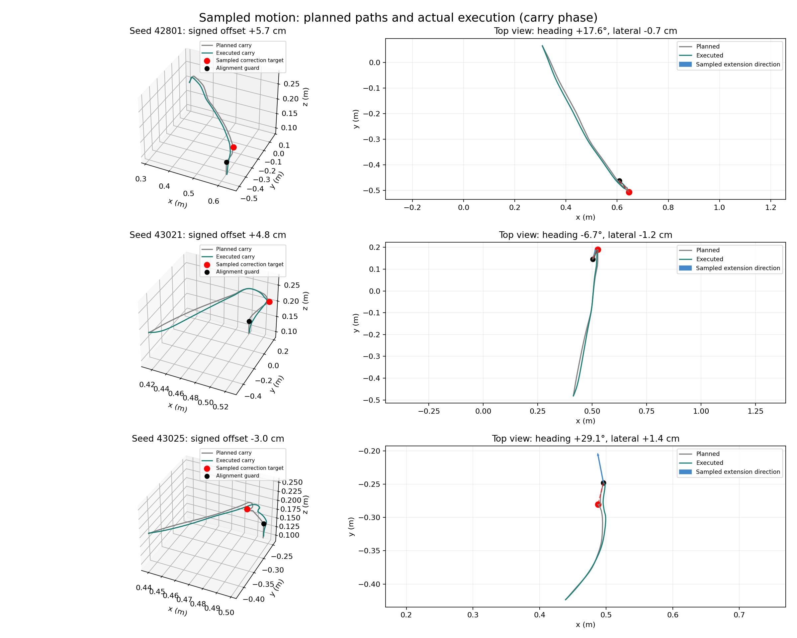

Overshoot · seed 42801
Actual simulation duration 16.66 s. Planned offset +5.74 cm, lateral -0.67 cm, heading +17.6°. Executed position nearest the correction target: +3.53 cm along that direction; target miss 2.21 cm.
← All motion-comparison galleries
Version 4 · all videos at 1× actual simulation speed.
Start with the horizontal direction from carry start toward the tool’s placement-alignment point. Sample a heading within ±30° of that direction, then a signed longitudinal offset (−4 to +6 cm) and a lateral offset (±1.8 cm). Positive is beyond; negative is short. The correction target remains elevated before final alignment and descent. Wrist pointing direction does not define this displacement.
These bounds are engineering choices around tested motions, not measured human-distribution estimates. Paths are verified after execution; a sample is not automatically an expert demonstration.
Human donor shape; bend-location warp and transverse shape direction; free and alignment offset scales; correction sign, magnitude and heading; clearance and lift/withdraw heights; wrist rotation start/end timing; speed modulation and curvature-dependent slowdowns. Thirty-five continuous style settings plus the donor are sampled once per episode and recorded. Bend topology/count comes from the sampled human donor, rather than an independent count draw.
Wrist motion follows one shortest rotation arc between task poses, with sampled timing. Arbitrary alternating wrist perturbations are removed. Controller gains/damping, task contact poses, simulator physics, acceptance criteria and safety limits remain fixed. Sampling ranges necessarily remain specified.

The arrow marks the sampled extension direction. Red dot: planned correction target; black dot: alignment guard. The controller rounds the planned path; signed displacement at the nearest executed point is reported rather than treating intended offsets as achieved.
Actual simulation duration 16.66 s. Planned offset +5.74 cm, lateral -0.67 cm, heading +17.6°. Executed position nearest the correction target: +3.53 cm along that direction; target miss 2.21 cm.
Actual simulation duration 14.48 s. Planned offset +4.82 cm, lateral -1.17 cm, heading -6.7°. Executed position nearest the correction target: +4.33 cm along that direction; target miss 0.53 cm.
Actual simulation duration 12.96 s. Planned offset -3.01 cm, lateral +1.43 cm, heading +29.1°. Executed position nearest the correction target: -3.08 cm along that direction; target miss 0.78 cm.
Two additional tested samples are in the evidence. The visible undershoot seed was selected before execution for its −3 cm draw; the sample was not selected on success.
All five outcomes and ranges · Displayed sample settings and tracking · Previous fixed-offset v3 comparison
Interactive Viser viewers remain the preserved earlier versions; this page shows the new sampled generator.